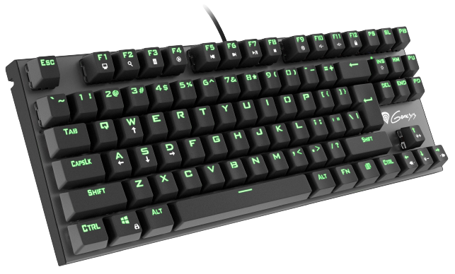
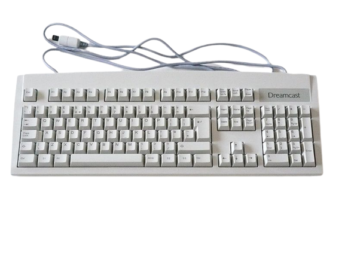
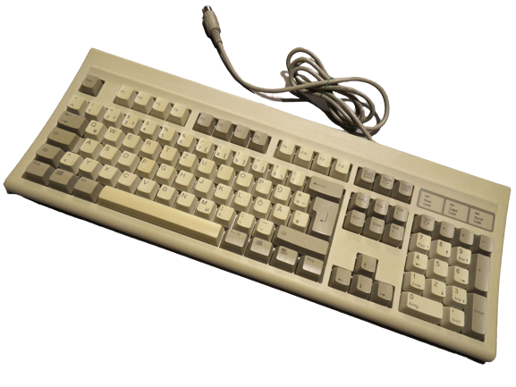

Klawiatury
Klawiatura to nieodłączny element współczesnego komputera, który pozwala na wprowadzanie danych do systemu. W dzisiejszych czasach korzystanie z klawiatury jest tak powszechne, że trudno wyobrazić sobie pracę z komputerem bez niej. Historia klawiatur sięga początków informatyki i ewoluowała wraz z rozwojem technologii. Pierwsze klawiatury były mechaniczne i zawierały tylko kilka klawiszy, ale dzięki innowacjom stały się coraz bardziej rozbudowane i wygodne w użyciu. Dzisiaj klawiatury posiadają setki klawiszy, specjalne klawisze funkcyjne i wiele innych funkcjonalności, co czyni je nie tylko narzędziem do wprowadzania danych, ale również ważnym elementem ergonomii pracy z komputerem.
historia
Historia klawiatur sięga XIX wieku, kiedy to powstały pierwsze mechaniczne klawiatury. Jednakże pierwsze klawiatury komputerowe pojawiły się w latach 60. XX wieku i składały się z rzędów przycisków. W kolejnych latach, klawiatury stały się coraz bardziej popularne, a ich konstrukcja uległa znacznej zmianie. Zastosowanie klawiszy membranowych i elektronicznych przycisków umożliwiło stworzenie bardziej wydajnych i wygodnych w użyciu klawiatur. Wraz z rozwojem technologii, klawiatury zyskały nowe funkcjonalności, takie jak klawisze multimedialne czy podświetlenie. Obecnie klawiatury są integralnym elementem komputerów, smartfonów, tabletów i innych urządzeń elektronicznych, a ich konstrukcja ciągle ewoluuje, aby lepiej odpowiadać potrzebom użytkowników.
 